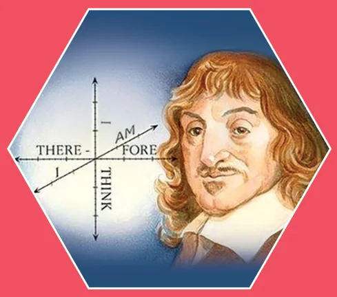
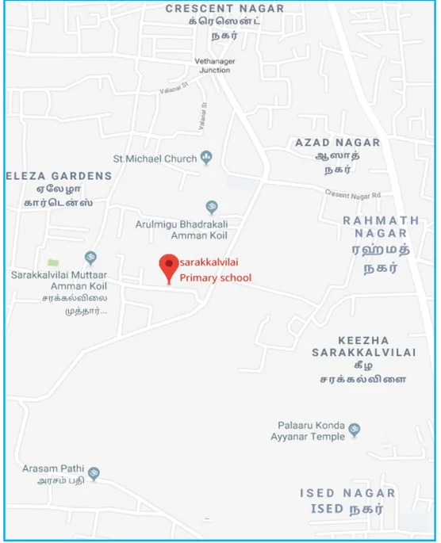

Divide each difficulty into as many parts as is feasible and necessary to resolve it.
- Rene Descartes

(AD(CE)1596-1650)
The French Mathematician Rene Descartes (pronounced "DAY- CART") developed a new branch of Mathematics known as Analytical Geometry or Coordinate Geometry which combined all arithmetic, algebra and geometry of the past ages in a single technique of visualising as points on a graph and equations as geometrical shapes. The fixing of a point position in the plane by assigning two numbers, coordinates, giving its distance from two lines perpendicular to each other, was entirely Descartes' invention.
Learning Outcomes
- To understand the Cartesian coordinate system.
- To identify the abscissa, ordinate and coordinates of any given point.
- To find the distance between any two points in the Cartesian plane using formula.
- To understand the mid-point formula and use it in problem solving.
- To derive the section formula and apply this in problem solving.
- To understand the centroid formula and to know its applications.
5.1 Mapping the Plane
How do you write your address? Here is one.
Sarakkalvilai Primary School
135, Sarakkalvilai,
Sarakkalvilai Housing Board Road,
Keezha Sarakkalvilai,
Nagercoil 629002, Kanyakumari Dist.
Tamil Nadu, India.

Somehow, this information is enough for anyone in the world from anywhere to locate the school one studied. Just consider there are crores and crores of buildings on the Earth. But yet, we can use an address system to locate a particular person's place of study, however interior it is.
How is this possible? Let us work out the procedure of locating a particular address. We know the World is divided into countries. One among them is India. Subsequently India is divided into States. Among these States we can locate our State Tamilnadu.
Further going deeper, we find our State is divided into Districts. Districts into taluks, taluks into villages proceeding further in this way, one could easily locate "Sarakkalvilai" among the villages in that Taluk. Further among the roads in that village, 'Housing Board Road' is the specific road which we are interested to explore. Finally we end up the search by locating Primary School building bearing the door number 135 to enable us precisely among the buildings in that road.

In New York city of USA, there is an area called Manhattan. The map shows Avenues run in the North – South direction and the Streets run in the East – West direction. So, if you know that the place you are looking for is on 57th street between 9th and 10th Avenues, you can find it immediately on the map. Similarly it is easy to find a place on 2nd Avenue between 34th and 35th streets. In fact, New Yorkers make it even simpler. From the door number on a street, you can actually calculate which avenues it lies between, and from the door number on an avenue, you can calculate which streets it stands.
All maps do just this for us. They help us in finding our way and locate a place easily by using information of any landmark which is nearer to our search to make us understand whether we are near or far, how far are we, or what is in between etc. We use latitudes (east – west, like streets in Manhattan) and longitudes (north – south, like avenues in Manhattan) to pin point places on Earth. It is interesting to see how using numbers in maps helps us so much.
This idea, of using numbers to map places, comes from geometry. Mathematicians wanted to build maps of planes, solids and shapes of all kinds. Why would they want such maps? When we work with a geometric figure, we want to observe wheather a point lies inside the region or outside or on the boundary. Given two points on the boundary and a point outside, we would like to examine which of the two points on the boundary is closer to the one outside, and how much closer and so on. With solids like cubes, you can imagine how interesting and complicated such questions can be.
Mathematicians asked such questions and answered them only to develop their own understanding of circles, polygons and spheres. But the mathematical tools and techniques were used to find immense applications in day to day life. Mapping the world using latitudes and longitudes would not have been developed at all in 18th century, if the co-ordinate system had not been developed mathematically in the 17th century.
You already know the map of the real number system is the number line. It extends infinitely on both directions. In between any two points, on a number line, there lies infinite number of points. We are now going to build a map of the plane so that we can discuss about the points on the plane, of the distance between the points etc. We can then draw on the plane all the geometrical shapes we have discussed so far, precisely.
Arithmetic introduced us to the world of numbers and operations on them. Algebra taught us how to work with unknown values and find them using equations. Geometry taught us to describe shapes by their properties. Co-ordinate geometry will teach us how to use numbers and algebraic equations for studying geometry and beautiful integration of many techniques in one place. In a way, that is also great fun as an activity. Can't wait? Let us plunge in.